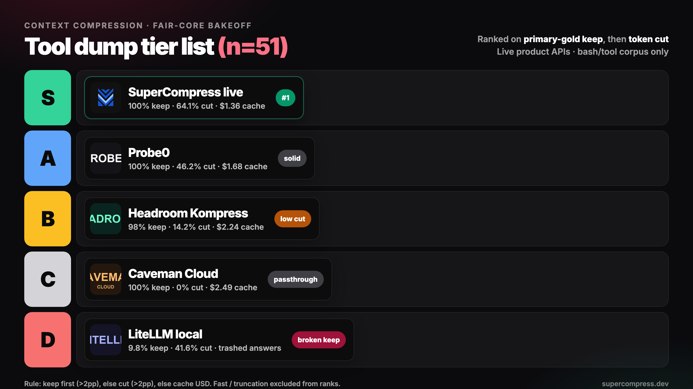

Context compression tier list on real tool dumps
Same corpus. Same scoring. Live products where it matters. We ranked compressors on whether they keep the golds first, then how hard they cut.

What we measured
Agents drown in bash and tool output. A compressor that deletes the needle is worse than no compressor. So the ranking rule is intentionally harsh:
- Primary-gold keep — required answer spans must survive. Gap > 2pp decides the race.
- Else token cut — higher cut wins if keep is tied within 2pp.
- Else cache USD — lower estimated prompt-cache spend on a fixed-prefix model.
Corpus: fair-core bash/tool only, n=51. Truncation and “delete half the file” baselines are reported for sanity, but excluded from ranking. Local SuperCompress Fast is shown as a reference delta only — it is not the customer live product.
Live-product ranking
| Tier | Arm | Primary gold | Cut | Cache USD |
|---|---|---|---|---|
| S | SuperCompress live | 100% | 64.1% | $1.36 |
| A | Probe0 tool-compact | 100% | 46.2% | $1.68 |
| B | Headroom Kompress | 98% | 14.2% | $2.24 |
| C | Caveman Cloud | 100% | 0% | $2.49 |
| D | LiteLLM local | 9.8% | 41.6% | $1.76 |
Full results table
| Arm | Primary | All golds | Cut | Cache USD | p50 ms | Errors |
|---|---|---|---|---|---|---|
| supercompress-live | 100% | 100% | 64.1% | $1.36 | 45506 | 0 |
| probe0-tool-compact | 100% | 54.9% | 46.2% | $1.68 | 0.4 | 0 |
| headroom-kompress | 98% | 51% | 14.2% | $2.24 | 1078 | 0 |
| caveman-cloud | 100% | 100% | 0% | $2.49 | 321 | 0 |
| litellm-local | 9.8% | 7.8% | 41.6% | $1.76 | 1.3 | 0 |
| supercompress-fast (ref only) | 100% | 100% | 70.3% | $1.25 | 1.9 | 0 |
| truncation-0.35 | 49% | 49% | 66.4% | $1.32 | 0 | 0 |
| raw (no compress) | 100% | 100% | 0% | $2.49 | — | 0 |
How to read the tiers
S SuperCompress live
Customer endpoint https://www.supercompress.dev/api/v1/compress, modes reported: compiler. Kept every primary gold and every all-gold diagnostic span, while cutting ~64% of tokens. Slowest wall clock in this run (hosted path), cheapest cache spend among keep-perfect live arms.
A Probe0
Exact tool-compact behavior port. Perfect primary keep, weaker all-golds (54.9%) because mid-file reads are head+tail by design. Strong cut, still behind live SuperCompress on tokens and cache USD. Probe0 still owns other jobs outside this frame (TTL, routing, spend caps).
B Headroom Kompress
Near-perfect primary keep (98%) but only 14.2% cut — expensive relative to raw and barely compresses the dump.
C Caveman Cloud
Contract takes input only (no query). On this key it measured as passthrough: 100% keep, 0% cut, same cache USD as raw.
D LiteLLM local
Cuts tokens (~42%) but keeps almost none of the primary golds (9.8%). Compression that breaks answers loses by rule #1.
Scope honesty
- This is one job class: fair-core bash/tool dumps with gold spans. Not a claim about every agent workload.
- SuperCompress live / Headroom / LiteLLM / Probe0 receive the query. Caveman Cloud does not.
- Local Fast is a reference delta, not ranked as the live product.
- Probe0 TTL / routing / spend-cap wins are outside this contest.
- Latency is wall-clock on this machine/network; use keep + cut for ranking, not p50.